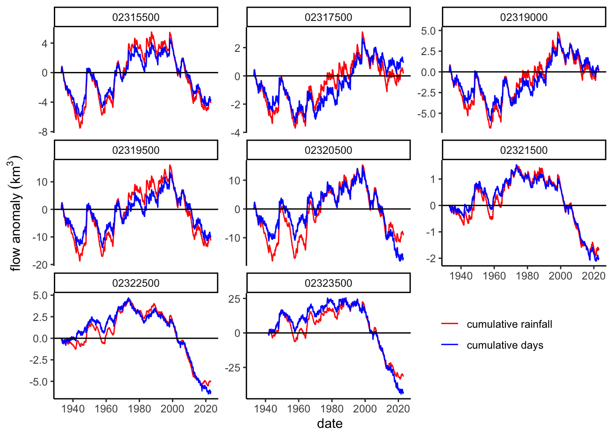
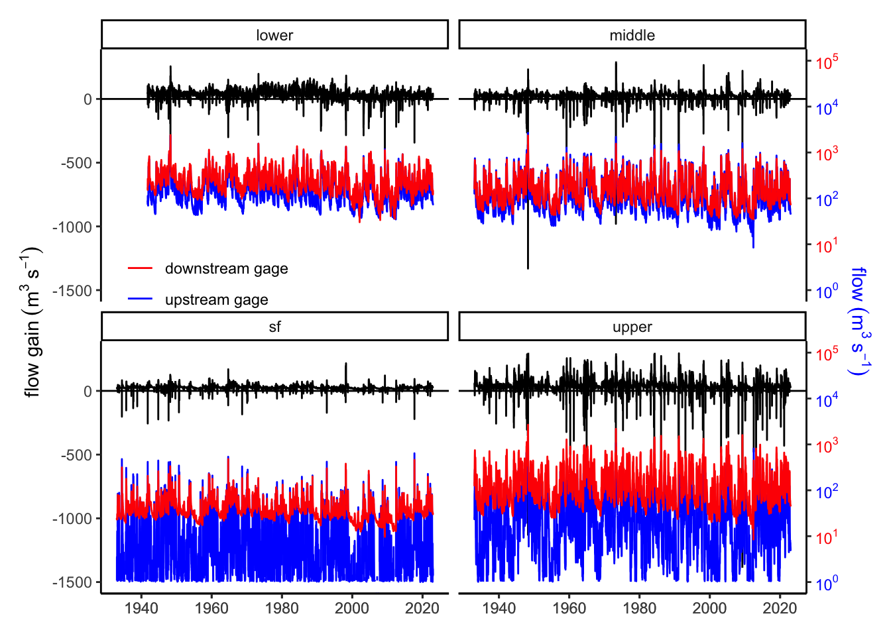
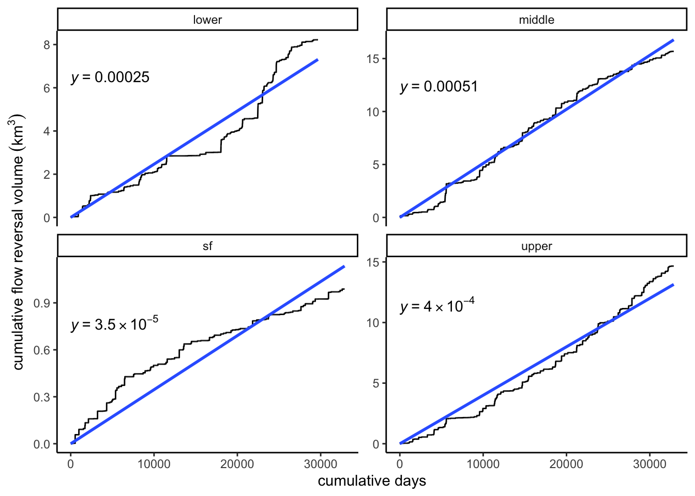
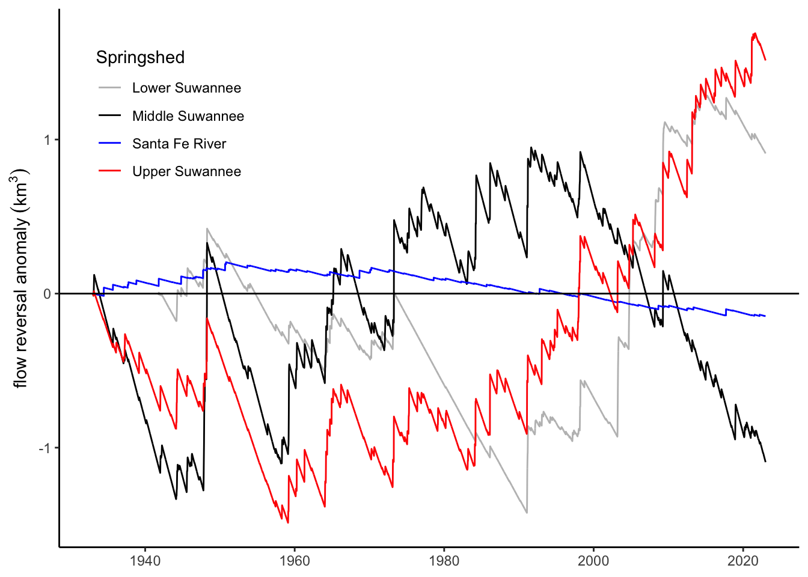

This report contains the workflow for calculating the hydrological analysis Suwannee River basin originally developed by Matthew Cohen. The data used in this report come from:
the PRISM dataset, which is a high-resolution gridded dataset of temperature and precipitation. The data is available at a 4km resolution and is available for the entire United States. The monthly data is available from 1891 to the present, but the data used here are daily from 1981 to the present. The data is available for download from the PRISM website.
the Lake City rainfall gage, which is the
the USGS streamflow data for 8 gages in the Suwannee River basin. The data is available from the USGS website.
The workflow is divided into the following sections:
Load data
Calculate cumulative anomalies
Calculate the flow duration curve
2 Load data
2.1 GIS data
The first step is to get the GIS layers. This is how we get the PRISM data linked to the subwatershed polygons. I downloaded the HUC8 shapefiles for the Suwannee River basin from the NHDPlus website. The shapefile contains the 8 subwatershed polygons for the Suwannee River basin. I then converted the shapefile to the same CRS as the PRISM data. The code to do this is below, but is commented out as it has already been run and takes some time.
Code
# All of this is commented out now to save on run time# # Load the 4 most upstream shapefiles# upper_suw <- st_read(here("data", "gis", "NHD_H_03110201_HU8_Shape", "Shape", "WBDHU8.shp")) %>%# st_transform(crs = 4269)# alapaha <- st_read(here("data", "gis", "NHD_H_03110202_HU8_Shape", "Shape", "WBDHU8.shp")) %>%# st_transform(crs = 4269)# withla <- st_read(here("data", "gis", "NHD_H_03110203_HU8_Shape", "Shape", "WBDHU8.shp")) %>%# st_transform(crs = 4269)# little <- st_read(here("data", "gis", "NHD_H_03110204_HU8_Shape", "Shape", "WBDHU8.shp")) %>%# st_transform(crs = 4269)# # # Combine the withla and little shapefiles to be withla# withla <- st_union(withla, little) %>%# # sum all the areas of the huc10s (areasqkm), each time a union is made, # #it adds a ".x" where x is the number of the union# mutate(areasqkm = sum(areasqkm, areasqkm.1)) %>%# # now drop all the other columns containing a "." in the name# dplyr::select(-contains("."))# # # Load the santa fe and lower suwannee# sf <- st_read(here("data", "gis", "NHD_H_03110206_HU8_Shape", "Shape", "WBDHU8.shp")) %>%# st_transform(crs = 4269)# lower_suw <- st_read(here("data", "gis", "NHD_H_03110205_HU8_Shape", "Shape", "WBDHU8.shp")) %>%# st_transform(crs = 4269)# # # Just the get the huc10s for the lower suwannee so can split into middle and lower# lower_suw_huc10 <- st_read(here("data", "gis", "NHD_H_03110205_HU8_Shape", "Shape", "WBDHU10.shp")) %>%# st_transform(crs = 4269)# # # Merge the first four huc10 polygons into a single polygon, call that the middle suwannee# middle_suw <- st_union(lower_suw_huc10[1,], lower_suw_huc10[2,]) %>%# st_union(st_union(lower_suw_huc10[3,], lower_suw_huc10[4,])) %>%# # sum all the areas of the huc10s (areasqkm), each time a union is made, # #it adds a ".x" where x is the number of the union# mutate(areasqkm = sum(areasqkm, areasqkm.1, areasqkm.2, areasqkm.1.1)) %>%# # now drop all the other columns containing a "." in the name# dplyr::select(-contains(".")) %>%# mutate(name = "Middle Suwannee")# # # Merge the last two huc10 polygons into a single polygon, call that the lower suwannee# lower_suw <- st_union(lower_suw_huc10[5, ], lower_suw_huc10[6, ]) %>%# st_union(st_union(lower_suw_huc10[7, ], lower_suw_huc10[8, ])) %>%# # sum all the areas of the huc10s (areasqkm), each time a union is made, # #it adds a ".x" where x is the number of the union# mutate(areasqkm = sum(areasqkm, areasqkm.1, areasqkm.2, areasqkm.1.1)) %>%# # now drop all the other columns containing a "." in the name# dplyr::select(-contains(".")) %>%# mutate(name = "Lower Suwannee")# # # get all the shapefiles together# all <- bind_rows(upper_suw, alapaha, withla, sf, middle_suw, lower_suw)# # # Save this data for use later# saveRDS(all, file = here("data", "gis", "suwannee_subwatersheds.RDS"))
Now we can load the GIS layers and take a look to make sure they are correct (Figure 1).
Code
# Load the suwannee subwatershedsall <-readRDS(here("data", "gis", "suwannee_subwatersheds.RDS"))# discharge gage numbersgages <-c("02319000", "02317500", "02315500", "02319500", "02320500", "02321500", "02322500", "02323500")# Get the locations of the gages relevant USGS gagesusgs_meta <-readNWISsite(gages)# load the springs shapefile, this comes from the Suwannee River Water Management District sitesprings <-st_read(here("data", "gis", "springs_SRWMD_24k", "sprsrwmd24.shp")) %>%st_transform(crs =4269)# only want the springs that are within the watershedsprings <-st_intersection(springs, all)# Load the florida shapefilefl <-st_as_sf(maps::map("state", regions ="florida", fill=TRUE, plot =FALSE))# now get the flowlines for the suwannee, alapaha, withla, and sfsuwannee_flowline <-st_read(here("data", "gis", "NHD_H_03110201_HU8_Shape", "Shape", "NHDFlowline.shp")) %>%st_transform(crs =4269) %>%st_zm(drop =TRUE, what ="ZM") %>%filter(gnis_name =="Suwannee River")alapaha_flowline <-st_read(here("data", "gis", "NHD_H_03110202_HU8_Shape", "Shape", "NHDFlowline.shp")) %>%st_transform(crs =4269) %>%st_zm(drop =TRUE, what ="ZM") %>%filter(gnis_name =="Alapaha River")withla_flowline <-st_read(here("data", "gis", "NHD_H_03110203_HU8_Shape", "Shape", "NHDFlowline.shp")) %>%st_transform(crs =4269) %>%st_zm(drop =TRUE, what ="ZM") %>%filter(gnis_name =="Withlacoochee River")little_flowline <-st_read(here("data", "gis", "NHD_H_03110204_HU8_Shape", "Shape", "NHDFlowline.shp")) %>%st_transform(crs =4269) %>%st_zm(drop =TRUE, what ="ZM") %>%filter(gnis_name =="Little River")sf_flowline <-st_read(here("data", "gis", "NHD_H_03110206_HU8_Shape", "Shape", "NHDFlowline.shp")) %>%st_transform(crs =4269) %>%st_zm(drop =TRUE, what ="ZM") %>%filter(gnis_name =="Santa Fe River")sw_flowline <-st_read(here("data", "gis", "NHD_H_03110205_HU8_Shape", "Shape", "NHDFlowline.shp")) %>%st_transform(crs =4269) %>%st_zm(drop =TRUE, what ="ZM") %>%filter(gnis_name =="Suwannee River")# merge all the flowlines to one geometry for easier plottingflowlines <-bind_rows(suwannee_flowline, alapaha_flowline, withla_flowline, little_flowline, sf_flowline, sw_flowline)# Plot of the watersheds, flowlines, gages, and springs with north arrow and scale bar# and legendp_main <-ggplot() +geom_sf(data = all) +geom_sf(data = flowlines, aes(color ="Major rivers"), size =0.5) +geom_sf(data = springs, aes(fill ="Springs"), size =1, shape =21,color ="black") +geom_point(data = usgs_meta, aes(x = dec_long_va, y = dec_lat_va, fill ="USGS gages"), color ="black", size =2, shape =21) + ggrepel::geom_text_repel(data = usgs_meta, aes(x = dec_long_va, y = dec_lat_va, label = site_no),color ="black", size =3) +# add text for each subwatershedgeom_sf_text(data =st_centroid(all), aes(label = name),color ="black", size =3, nudge_x =c(0.05, 0, 0, 0, -0.5, -0.5),nudge_y =c(0.3, 0.4, 0.2 ,0.12, 0, 0)) +scale_color_manual(values ="black") +scale_fill_manual(values =c("lightblue", "white")) +annotation_north_arrow(location ="bl", which_north ="true", pad_x =unit(0.1, "in"), pad_y =unit(0.1, "in"), style = north_arrow_fancy_orienteering) +annotation_scale(location ="br", width_hint =0.4, text_cex =0.8) +theme(axis.title =element_blank(),panel.background =element_rect(fill ="white"),legend.title =element_blank(),legend.position =c(0.85, 0.12),legend.spacing.y =unit(-0.5, "cm"),legend.background =element_rect(fill ="transparent")) +labs(title ="Suwannee River subwatersheds",caption ="Data from USGS NWIS, NHDPlus, and SRWMD",x ="",y ="")# add an inset of the florida map with the suwannee watershed# dissolve the internal subwatershed boundariesp_inset <-ggplot() +geom_sf(data = fl) +geom_sf(data =st_union(all)) +geom_sf(data = flowlines, color ="black", size =0.3) +theme_minimal() +theme(axis.title =element_blank(),legend.title =element_blank(),axis.text =element_blank(),panel.grid =element_blank(),panel.background =element_rect(fill ="white"))
Figure 1: Map of study area with subwatersheds, gages, springs, and flowlines.
2.2 Rainfall data
Now we can link the PRISM data to each subwatershed to get the daily rainfall from 1981–2022. The first step is to download the PRISM data. The code to to do this is below, but is commented out as it has already been run and takes some time.
Code
# # Download daily PRISM data since 1981 ------------------------------------# # Set the prism download folder# prism_set_dl_dir(here("data", "prism"))#--- download PRISM precipitation data ---## Only want to do this once because it's huge and takes forever# commented out after downloaded # get_prism_dailys(# type = "ppt",# minDate = "1981-01-01",# maxDate = "2022-12-31",# keepZip = FALSE# )# # Get the PRISM data for the subwatersheds --------------------------------# # Again only want to do this once because it takes a while to load, code # # here for reproducibility# # Create a stack of rasters for all the prism data# prism_rasters <- pd_stack(prism_archive_ls())# # # Load the Suwannee River basin shapefile with its 8 subwatershed polygons# # and convert this to the same CRS as the prism data# suw_sf <- readRDS(here("data", "gis", "suwannee_subwatersheds.RDS")) %>%# st_transform(crs = terra::crs(prism_rasters[[1]]))# # # Get the prism data by subwatershed, each prism point also contains the coverage fraction# ppt_stack <- exact_extract(prism_rasters, suw_sf, progress = F)# # # Combine the extracted data into a single data frame, id is the subwatershed number# ppt <- bind_rows(ppt_stack, .id = "id")# # # Save these so don't have to load again# saveRDS(ppt, here("data", "gis", "suwannee_prism_daily_ppt.RDS"))# saveRDS(prism_rasters, here("data", "gis", "prism_daily_raster_stack.RDS"))
Now we link the PRISM data with each watershed shapefile, weighting the data by the “coverage fraction” that is included in the PRISM data. This is done in the code below.
Code
# Load the previously calculated Suwannee River basin shapefile with its 8 subwatershed polygons# and convert this to the same CRS as the prism data (NAD83)suw_sf <-readRDS(here("data", "gis", "suwannee_subwatersheds.RDS")) %>%#st_transform(crs =4269)# Get the PRISM data in usable format --------------------------------# read in the prim datappt <-readRDS(here("data", "gis", "suwannee_prism_daily_ppt.RDS"))# pivot to longer format, extract year and month and day from the column names# column names are in the form: "PRISM_ppt_stable_4kmM3_YYYYMM_bil" (this was for monthly)# column names are in the form: "PRISM_ppt_stable_4kmD1_YYYYMMDD_bil" (this is for daily)ppt_df <- ppt %>%pivot_longer(cols =-c(id, coverage_fraction), names_to ="year_month_day", values_to ="ppt") %>%mutate(year =as.integer(str_sub(year_month_day, 24, 27)),month =as.integer(str_sub(year_month_day, 28, 29)),day =as.integer(str_sub(year_month_day, 30, 31)))# Next, filter out rows with NA in month column because those are yearly summaries# from before 1981, and then# calculate the coverage-weighted mean of ppt for each subwatershed and monthppt_df <- ppt_df %>%filter(!is.na(month)) %>%group_by(id, year, month, day) %>%summarise(ppt_aw =sum(ppt * coverage_fraction) /sum(coverage_fraction)) %>%mutate(id =as.numeric(id))# Link that summary data back with the polygonssuw_final <- suw_sf %>%mutate(id :=seq_len(nrow(.))) %>%left_join(., ppt_df, by ="id")
Let’s take a look at average annual rainfall for each subwatershed from 1981–2022 (Figure 2).
Code
# Caclulate annual rainfall each year by watershedppt_yr <-st_drop_geometry(suw_final) %>%group_by(name, areasqkm, id, year) %>%summarise(ppt_ann =sum(ppt_aw)) %>%ungroup() # Plot, arrange the bars by HUCp_ppt_ann <-ggplot(ppt_yr, aes(x =fct_relevel(name, "Lower Suwannee", "Santa Fe", "Middle Suwannee", "Withlacoochee", "Alapaha", "Upper Suwannee"), y = ppt_ann)) +stat_summary(fun = mean, geom ="bar") +stat_summary(fun.data = mean_sdl, fun.args =list(mult =1), geom ="errorbar", width =0.2) +# y-axis minimum of 1000coord_cartesian(ylim =c(1000, NA)) +# scale_fill_viridis_c() +theme_minimal() +theme(axis.text.x =element_text(angle =45, hjust =1)) +labs(x ="Subwatershed", y ="Average Annual Precipitation (mm)")
Figure 2: Mean annual rainfall (1981–2022) by subwatershed with standard deviation as error bars.
Now, for the years before 1981, we will use the Lake City rainfall gage data (observed data). Matt has already downloaded this and provided it. We will load the data, plot it (Figure 3 (a)), and calculate and plot the exceedance probability to get an idea of “big” and “small” storms (Figure 3 (b)).
Code
# Load the observed rainfall data and some analysis -----------------------# load the measured Lake City rainfall datalc_rain <- readxl::read_xlsx(here("data", "lake_city_rain.xlsx"))# Plot the daily rainfall at Lake Cityp_lc_rain <-ggplot(lc_rain, aes(x =as.Date(Date), y =`LCRain (mm)`)) +geom_line() +scale_x_date(date_labels ="%Y", date_breaks ="10 years") +theme_classic() +theme(axis.title.x =element_blank()) +labs(y =expression("observed rainfall at Lake City "*(mm~d^{-1})))p_lc_rain# Calculate the exceedance probability for the Lake City rainfall data# need to first remove all zero rain dayslc_rain_exc <-rename(lc_rain, date = Date, ppt =`LCRain (mm)`) %>%filter(ppt >0) %>%arrange(ppt) %>%mutate(rank =row_number(),exceedance =1- rank /n())# create a dataframe for plotting line segments at the closest exceedances to # 10% and 20% with the corresponding rainfall values. need to use slice_min# for each exceedance levellc_rain_exc_lines <- lc_rain_exc %>%slice_min(abs(exceedance -0.1)) %>%bind_rows(lc_rain_exc %>%slice_min(abs(exceedance -0.2))) %>%bind_rows(lc_rain_exc %>%slice_min(abs(exceedance -0.501))) %>%mutate(ppt =round(ppt, 1))# plot the exceedance probability for the Lake City rainfall data on log scale, p_lc_exc <-ggplot(lc_rain_exc, aes(x = exceedance, y = ppt)) +geom_line() +scale_x_reverse(expand =expansion(mult =c(0, 0.01)),breaks =seq(0,1,0.1)) +scale_y_log10(expand =expansion(mult =c(0, 0))) +# add the lines and labels from the dataframegeom_segment(data = lc_rain_exc_lines, aes(x = exceedance, xend = exceedance, y =0, yend = ppt), linetype ="dashed") +geom_segment(data = lc_rain_exc_lines, aes(x =1, xend = exceedance, y = ppt, yend = ppt), linetype ="dashed") +geom_text(data = lc_rain_exc_lines, aes(label = ppt, x = exceedance, y = ppt),nudge_y =0.1) +annotation_logticks(sides ="l") +theme_classic() +labs(x ="exceedance probability", y =expression("rainfall "(mm~d^{-1})))p_lc_exc
(a) Daily rainfall (1931–2022)
(b) Rainfall exceedance probability (1931–2022) at Lake City, with 50%, 20%, and 10% probabilities shown.
Figure 3: Lake City rainfall summary.
Now let’s check to see how well the PRISM data matches the Lake City rainfall data. We will plot the two datasets together, first comparing daily (Figure 4 (a)), then monthly (Figure 4 (b)). It is clear that the daily data is not a great match, but the monthly data is much better. Still, for the moment, we will assume that daily data before 1981 is the same as the Lake City data, but afterwards is subwatershed-specific from PRISM.
Code
st_drop_geometry(suw_final) %>%mutate(date =ymd(paste(year, month, day))) %>%select(id, name, year, date, ppt_aw) %>%left_join(lc_rain %>%rename(lc_ppt =`LCRain (mm)`,date = Date)) %>%ggplot(aes(x = ppt_aw, y = lc_ppt)) +geom_point() +geom_smooth(method ="lm", se =FALSE) + ggpubr::stat_regline_equation(label.y =200, label.x =30) + ggpubr::stat_cor(aes(label =after_stat(rr.label)), label.y =175, label.x =30) +facet_wrap(~name) +theme_classic() +labs(x =expression("subwatershed rainfall "(mm~d^{-1})), y =expression("Lake City rainfall "(mm~d^{-1})))# Calculate the cumulative monthly rainfall for Lake Citylc_month <- lc_rain %>%mutate(date =as.Date(Date, format ="%m/%d/%Y"),year =year(date),month =month(date),day =day(date),ppt =as.numeric(`LCRain (mm)`)) %>%group_by(year, month) %>%summarise(ppt =sum(ppt)) %>%ungroup()prism_month <-st_drop_geometry(suw_final) %>%group_by(name, year, month) %>%summarise(ppt =sum(ppt_aw)) %>%ungroup()prism_month %>%select(name, year, month, ppt) %>%left_join(lc_month %>%select(year, month, lc_ppt = ppt)) %>%ggplot(aes(x = ppt, y = lc_ppt)) +geom_point() +geom_smooth(method ="lm", se =FALSE) + ggpubr::stat_regline_equation(label.y =200, label.x =450) + ggpubr::stat_cor(aes(label =after_stat(rr.label)), label.y =100, label.x =450) +facet_wrap(~name) +theme_classic() +labs(x =expression("subwatershed rainfall "(mm~mo^{-1})), y =expression("Lake City rainfall "(mm~mo^{-1})))# Assume all rainfall before 1981 is the same as Lake City data, afterwards is # subwatershed PRISM data# Get a crossing of all the rainfall data for each subwatershed from Lake City before 1980rain <-distinct(st_drop_geometry(suw_final), name) %>%crossing(distinct(lc_rain, Date) %>%filter(Date <ymd(19810101))) %>%left_join(lc_rain, by ="Date") %>%mutate(year =year(as.Date(Date, format ="%m/%d/%Y")),ppt =`LCRain (mm)`) %>%rename(date = Date) %>%bind_rows(select(st_drop_geometry(suw_final), name, year, month, day, ppt = ppt_aw) %>%mutate(date =ymd(paste(year, month, day)))) %>%arrange(name, date) %>%select(-month, -day, -`LCRain (mm)`, -Day)# save this data# saveRDS(rain, here("data", "suwannee_rainfall.RDS"))
(a) Daily comparison (1981–2022)
(b) Monthly comparison (1981–2022)
Figure 4: Lake City versus PRISM rainfall
2.3 Discharge data
Now we will load the discharge data from the USGS gages in the Suwannee River basin. We will calculate the cumulative daily discharge for each gage over the period of record and plot the timeseries for each gage on log-y axes (Figure 5).
Code
# Get the discharge of the gages relevant USGS gages# There are 8 gages with data going back to 1931gages <-c("02319000", "02317500", "02315500", "02319500", "02320500", "02321500", "02322500", "02323500")# # Download the daily discharge data from USGS, only do this once to save time# # commented out after downloaded# usgs_data <- readNWISdv(siteNumbers = gages, parameterCd = "00060", # startDate = "1931-01-01", endDate = "2022-12-31")# # Calculate the running cumulative discharge over the period of record for each gage# flow <- usgs_data %>%# rename(Q = X_00060_00003,# date = Date) %>%# # convert to cubic meters per second# mutate(Q = Q * 0.0283168)# saveRDS(flow, here("data", "suwannee_discharge.RDS"))flow <-readRDS(here("data", "suwannee_discharge.RDS"))# Plot the timeseries for each site on log-y axesggplot(flow, aes(x = date, y = Q)) +geom_line() +scale_y_log10(breaks =trans_breaks("log10", function(x) 10^x),labels =trans_format("log10", math_format(10^.x))) +annotation_logticks(sides ="l") +facet_wrap(~site_no, scales ="free_y") +theme_classic() +labs(x ="date",y =expression("discharge"~(m^3~s^{-1})))
Figure 5: Discharge data from USGS gages in the Suwannee River basin.
3 Calculate cumulative anomalies
With data in hand, now we can calculate the cumulative anomalies for each subwatershed. First, however, we will calculate the cumulative rainfall and discharge over time for each subwatershed. The deviations from the fitted line of these timeseries will be used to calculate the anomalies. Cumulative rainfall patterns vary quite little across watersheds (Figure 6 (a)), but the discharge patterns are quite different (Figure 6 (b)).
Code
# calculate the cumulative rainfall and discharge for each subwatershed# first need to link each watershed USGS gage with its discharge datadf <- flow %>%mutate(name =case_when( site_no =="02319000"~"Withlacoochee", site_no =="02317500"~"Alapaha", site_no =="02315500"~"Upper Suwannee", site_no =="02319500"~"Upper Suwannee", site_no =="02320500"~"Middle Suwannee", site_no =="02321500"~"Santa Fe", site_no =="02322500"~"Santa Fe", site_no =="02323500"~"Lower Suwannee")) %>%select(site_no, name, date, Q) %>%filter(year(date) >=1933) %>%left_join(select(rain, name, date, ppt), by =c("name", "date"))# Calculate the cumulative rainfall and discharge or each sitedf <- df %>%group_by(site_no) %>%arrange(date) %>%mutate(cum_ppt =cumsum(ppt),cum_Q =cumsum(Q),cum_D =row_number())# Plot the cumulative rainfall and discharge by cumulative days for each site# include best fit line with force fit through 0# First just rainfallp_cumP <-ggplot(df, aes(x = cum_D, y = cum_ppt)) +geom_point(linewidth =0.5) +geom_smooth(method ="lm", se = F, formula = y ~ x +0, linewidth =0.3) +facet_wrap(~name) + ggpubr::stat_regline_equation(formula = y ~ x +0,label.y.npc =0.8) +theme_classic() +labs(x ="cumulative days",y ="cumulative rainfall (mm)")p_cumP# Now do discharge, but do it in km^3/d (currently in m3/s), and include on each panel the# cumulative discharge (y-axis) against both cumulative rainfall ("blue") and cumulative days ("red")p_cumQ <-ggplot(df, aes(y = cum_Q *86400/1e9)) +geom_line(aes(x = cum_ppt, color ="cum_ppt"), linewidth =0.5) +geom_line(aes(x = cum_D, color ="cum_D"), linewidth =0.5) +geom_smooth(aes(x = cum_D), method ="lm", se = F, formula = y ~ x +0, linewidth =0.3, linetype ="dashed", color ="black") +geom_smooth(aes(x = cum_ppt), method ="lm", se = F, formula = y ~ x +0, linewidth =0.3, linetype ="dashed", color ="black") +facet_wrap(~site_no) + ggpubr::stat_regline_equation(aes(x = cum_D), formula = y ~ x +0,label.y.npc =0.8) + ggpubr::stat_regline_equation(aes(x = cum_ppt), formula = y ~ x +0,label.y.npc =0.7) +theme_classic() +guides(color =guide_legend(title =NULL)) +scale_color_manual(values =c("cum_ppt"="blue", "cum_D"="red"),labels =c("cumulative rainfall", "cumulative days"))+labs(x ="cumulative days or cumulative rainfall (mm)",y =expression("cumulative discharge "(km^3))) +theme(legend.position =c(0.8, 0.2))p_cumQ
(a) Cumulative rainfall by subwatershed (1933–2022)
(b) Cumulative discharge by subwatershed (1933–2022)
Figure 6: Lake City versus PRISM rainfall
Now we calculate the anomalies for each subwatershed. We will use the residuals from the best-fit line of the cumulative rainfall and discharge data to calculate the anomalies. We will then plot the anomalies for each subwatershed.
Rainfall anomalies are generally coherent across watersheds within the upper and lower parts of the watershed. Upper waterhsed subwatersheds exhibited a a peak of positive anomalies in the 1980s and 90s, whereas there has been an increasing trend in lower watershed subwatersheds since over time (Figure 7 (a)), with a sharp peak in recent years. Discharge anomalies are follow this split into upper and lower watershed behavior., The most downstream sites exhibited consistent positive anomalies from the 1960s to 90s, but are now exhibiting a sharp downturn in the past two decades (Figure 7 (b)). This “recent” decrease was common to most sites, except for the Alapaha and Withlacoochee gages. There was very little difference in the methods for discharge anomalies between cumulative rainfall or cumulative day approaches, suggesting the signals are robust.
Code
# Now we calculate the anomalies for each subwatershed. We will use the residuals # from the best-fit line of the cumulative rainfall and discharge data to calculate # the anomalies. We will then plot the anomalies for each subwatershed.ppt_anom <- df %>%group_by(name) %>%nest() %>%mutate(lm =map(data, ~lm(cum_ppt ~ cum_D +0, data = .)),residuals =map2(data, lm, ~mutate(.x, residual = .x$cum_ppt -predict(.y, .x)))) %>%unnest(residuals) %>%ungroup() %>%select(-lm, -data)# plot the residuals over timep_res_ppt_time <-ggplot(ppt_anom, aes(x = date, y = residual)) +geom_line() +facet_wrap(~name, scales ="free_y") +geom_hline(yintercept =0) +theme_classic() +labs(x ="date",y ="rainfall anomaly (mm)")p_res_ppt_time# Now do discharge, but do it in km^3/d (currently in m3/s), and include on each panel the anomalies from# cumulative discharge (y-axis) against both cumulative rainfall ("blue") and cumulative days ("red")Q_anom <- df %>%group_by(site_no) %>%nest() %>%mutate(lm_D =map(data, ~lm(cum_Q ~ cum_D +0, data = .)),residuals_D =map2(data, lm_D, ~mutate(.x, res_D = .x$cum_Q -predict(.y, .x))),lm_ppt =map(data, ~lm(cum_Q ~ cum_ppt +0, data = .)),residuals_ppt =map2(data, lm_ppt, ~transmute(.x, res_ppt = .x$cum_Q -predict(.y, .x))),) %>%unnest(c(residuals_D, residuals_ppt)) %>%ungroup() %>%select(-lm_D, -lm_ppt, -data)# plot the anomalies over timep_res_Q_time <-ggplot(Q_anom, aes(x = date)) +geom_line(aes(y = res_D *86400/1E9, color ="cum_D")) +geom_line(aes(y = res_ppt *86400/1E9, color ="cum_ppt")) +facet_wrap(~site_no, scales ="free_y") +geom_hline(yintercept =0) +theme_classic() +scale_color_manual(name ="", values =c("cum_ppt"="blue", "cum_D"="red"),labels =c("cumulative rainfall", "cumulative days"))+labs(y =expression("upstream flow anomaly "(km^3))) +theme(legend.position =c(0.8, 0.2))p_res_Q_time
(a) Rainfall anomaly by subwatershed (1933–2022)

(b) Discharge anomaly by subwatershed (1933–2022)
Figure 7: Rainfall and discharge anomalies over time
Now let’s compare all on the same chart to aid in comparison.
Code
# do the same thing, but all on one plot, only lower, santa fe, middle, upper, and lake city# lake city are observed and plotted as dashed lines, the other subwatersheds are solid and coloredp_res_P_time2 <- ppt_anom %>%filter(name %in%c("Lower Suwannee", "Santa Fe", "Middle Suwannee", "Upper Suwannee")) %>%ggplot(aes(x = date, y = residual /1000, color = name)) +scale_color_manual(values =c("Lower Suwannee"="darkgrey", "Santa Fe"="blue", "Middle Suwannee"="black", "Upper Suwannee"="red")) +geom_line() +geom_hline(yintercept =0) +theme_classic() +theme(legend.title =element_blank(),legend.position =c(0.15, 0.85)) +labs(x ="date",y ="rainfall anomaly (m)")p_res_P_time2# Now the same for discharge, but want to get in units of meters for easier comparison,# need to divide by watershed areasp_res_Q_time2 <- Q_anom %>%filter(site_no %in%c("02323500", "02322500", "02320500", "02319500")) %>%left_join(dataRetrieval::readNWISsite(c("02323500", "02322500", "02320500", "02319500")) %>%select(site_no, area_mi2 = drain_area_va)) %>%mutate(areasqkm = area_mi2 *2.58999^2) %>%mutate(res_D = res_D / areasqkm *86400/1000^2,res_ppt = res_ppt / areasqkm *86400/1000^2) %>%ggplot(aes(x = date, y = res_D, color = site_no)) +scale_color_manual(values =c("02323500"="darkgrey", "02322500"="blue","02320500"="black", "02319500"="red"),labels =c("Upper Suwannee", "Middle Suwannee", "Santa Fe", "Lower Suwannee")) +geom_line() +geom_hline(yintercept =0) +theme_classic() +theme(legend.title =element_blank(),axis.title.x =element_blank(),legend.position =c(0.15, 0.85)) +labs(y ="cumulative temporal upstream flow anomaly (m)")p_res_Q_time2
(a) Rainfall anomaly by subwatershed (1933–2022)
(b) Discharge anomaly by subwatershed (1933–2022)
Figure 8: Rainfall and discharge anomalies over time
4 Flow gain analysis
Now let’s look at how much flow is gained between consecutive gages. This informs whether there is gaining or losing stream conditions. The prevalence of losing stream conditions is what’s of interest here as that indicates the amount of surface water flowing back into the springs. For each site pair, let’s look at a chart of the 1) flow gain over the record, 2), the flow gain since 1998, 3) the flow gain as a function of upstream flow, and 4) the histogram of the flowgain.
4.1 Travel time between gages
First, we should look at the hydraulic travel time between gages to align the flow data. This is done by dividing the distance between gages by the flow velocity between gages. The distance between gages is calculated along the river shapefile using the “rivdist” package in R.
Code
# # This is commented out for the moment to avoid loading a bunch of shapefiles# library(riverdist)# # # turn the flowlines (loaded in the first steps) into a network object# suw_net <- line2network(summarize(flowlines), reproject = "+proj=aea +lat_1=29.5 +lat_2=45.5 +lat_0=37.5 +lon_0=-96 +x_0=0 +y_0=0 +datum=NAD83 +units=m +no_defs") #needs projected crs, use WGS84# # # Turn the USGS gage sites into a shapefile with the same projection# usgs_pts <- st_as_sf(usgs_meta, coords = c("dec_long_va", "dec_lat_va"), crs = 4269) %>%# st_transform(crs = "+proj=aea +lat_1=29.5 +lat_2=45.5 +lat_0=37.5 +lon_0=-96 +x_0=0 +y_0=0 +datum=NAD83 +units=m +no_defs")# # # Turn those points into vertices on the network# pts <- xy2segvert(x = st_coordinates(usgs_pts)[,1], y = st_coordinates(usgs_pts)[,2], rivers = suw_net)# # # distances between points, a matrix of all possible distances between points# dist_mat <-riverdistancemat(pts$seg, pts$vert, suw_net)# # # only want distances between 2 and 4 ("ala_upper"), 3 and 4 ("withla_upper"),# # 1 and 4 ("upper"), 4 and 5 ("middle"), 5 and 8 ("lower"), 6 and 7 ("sf") and 7 and 8 ("sf_lower")# df_dists <- as_tibble(dist_mat) %>%# mutate(pt = row_number()) %>%# pivot_longer(cols = -pt) %>%# filter((pt == 2 & name == 4) |# (pt == 3 & name == 4) |# (pt == 1 & name == 4) |# (pt == 4 & name == 5) |# (pt == 5 & name == 8) |# (pt == 6 & name == 7) |# (pt == 7 & name == 8)) %>%# mutate(gage_pair = c("ala-suw", "withla-suw", "upper", "upper-mid", "mid-lower", "sf", "sf-lower")) %>%# mutate(site_no = c("02317500", "02319000", "02315500", "02319500", "02320500", "02321500", "02322500")) %>%# select(site_no, gage_pair, dist_m = value)# # saveRDS(df_dists, here("data", "suwannee_gage_distances.RDS"))
Now, we calculate a discharge-dependent flow velocity from measured data from the USGS, then predict velocity every day for each gage pair (Figure 9).
Code
# Get the velocity data from the USGSdf_vel <-readNWISmeas(gages, expanded =TRUE) %>%select(site_no, date = measurement_dt, Q = discharge_va, v = chan_velocity) %>%mutate(Q = Q *0.0283168, #ft3/s to m3/sv = v *0.3048) %>%#ft/s to m/sfilter(!is.na(v), v >0, v <2) # remove NA and unreasonable values# plot velocity as a function of discharge for each gage# not the best fits at 02319000 and 0231500, otherwise, good enough for purposes herep_vel <-ggplot(df_vel, aes(x = Q, y = v, color =year(date))) +geom_point() +geom_smooth(method ="glm", se =FALSE) +scale_x_log10() +scale_y_log10() +facet_wrap(~site_no, scales ="free_y") +theme_classic() +labs(x =expression("discharge"~(m^3~s^{-1})),y =expression("velocity"~(m~s^{-1})))p_vel# get velocity as a function of discharge for each gagedf_vel_mod <- df_vel %>%group_by(site_no) %>%nest() %>%mutate(lm =map(data, ~lm(log(v) ~log(Q), data = .))) %>%select(-data)
Figure 9: Velocity versus discharge for each gage on log axes.
Now, we calculate a travel time for each day between gage pairs, and look at the distribution (Figure 10). Travel time is typically 2 days between gages, but this varies, and we can account for this variation.
Code
# first load distances between gagesdf_dists <-readRDS(here("data", "suwannee_gage_distances.RDS"))# now calculate for each day the velocity between gages and then the travel time# between gagesdf_tt <- df %>%select(site_no, date, Q) %>%group_by(site_no) %>%nest() %>%left_join(df_vel_mod, by ="site_no") %>%mutate(v =map2(data, lm, ~mutate(.x, v =exp(predict(.y, .x))))) %>%unnest(v) %>%select(-data, -lm) %>%left_join(df_dists) %>%mutate(tt = dist_m / v /86400) %>%#travel times in daysselect(site_no, gage_pair, date, Q, v, tt)# get the median travel time for each gage pair for plottingdf_tt_med <- df_tt %>%filter(tt >0, tt <5) %>%group_by(gage_pair) %>%summarise(median_tt =median(tt, na.rm =TRUE))# look at histograms travel times between gagesggplot(df_tt %>%filter(tt >0, tt <5),aes(x = tt)) +geom_histogram() +geom_vline(data = df_tt_med, aes(xintercept = median_tt)) +geom_text(data = df_tt_med, aes(x =2.5, y =5000, label =paste0("median = ", round(median_tt, 2)))) +facet_wrap(~gage_pair, scales ="free_x") +theme_classic() +labs(x ="travel time (days)",y ="count")
Figure 10: Travel time in days between gages.
4.2 Flow gain between gages
Now we will estimate flow gain as the difference between gages, with a dynamic lag based on the estimated travel time each day. We will then plot the flow gain for each gage pair over time (Figure 11). There is clear evidence of large flow gain in the upper watershed which rapidly diminishes in the lower watershed and can even reverse.
Code
# Get a dataframe of the gage pairs and tributary flowsgage_pairs <-tibble(#gage_pair = c("withla_suw", "ala_suw", "upper", "upper_mid", "mid_lower", "sf_lower", "sf"),gage_pair =c("upper", "middle", "lower", "sf"),usGage =c("02315500", "02319500", "02320500", "02321500"),dsGage =c("02319500", "02320500", "02323500", "02322500"),tribGage1 =c("02319000", NA_character_, "02322500", NA_character_),tribGage2 =c("02317500", NA_character_, NA_character_, NA_character_), )# now calculate the flow gains between gages, accounting for travel time between gages# First make a function that dynamically lags a column by a given number of days# the inputs are the column of data to dynamically lag, and the column of lagslag_fun <-function(col, lag) {# first make sure that lag values are rounded to whole numbers lag <-round(lag)# now turn any lags greater than 5 days into 5, and any lags less than 0 into 0 lag <-ifelse(lag >5, 5, ifelse(lag <0, 0, lag))# can't use dplyr lag because it doesn't allow for dynamic lags# will need to make a for loop out <-numeric(length(col))for (i in1:length(col)) {if (i - lag[i] >0) { out[i] <- col[i - lag[i]] } else { out[i] <-NA } }return(out)}# Now get the flow gains, accounting for lagsdf_fg <- df_tt %>%select(site_no, date, Q, tt) %>%left_join(gage_pairs, join_by(site_no == usGage)) %>%drop_na(gage_pair) %>%group_by(gage_pair) %>%left_join(df %>%select(date, dsGage = site_no, dsQ = Q)) %>%left_join(df_tt %>%select(date, tribGage1 = site_no, trib1Q = Q, trib1tt = tt)) %>%left_join(df_tt %>%select(date, tribGage2 = site_no, trib2Q = Q, trib2tt = tt)) %>%mutate(trib1Q =if_else(is.na(trib1Q), 0, trib1Q),trib2Q =if_else(is.na(trib2Q), 0, trib2Q),trib1tt =if_else(is.na(trib1tt) |is.infinite(trib1tt), 0, trib1tt),trib2tt =if_else(is.na(trib2tt) |is.infinite(trib2tt), 0, trib2tt),tt =if_else(is.na(tt) |is.infinite(tt), 0, tt),trib1Qlag =lag_fun(trib1Q, trib1tt),trib2Qlag =lag_fun(trib2Q, trib2tt),usQlag =lag_fun(Q, tt),flow_gain = dsQ - usQlag - trib1Qlag - trib2Qlag) %>%rename(usQ = Q) %>%ungroup()# Plot the time series of flow gain, and flows at the upstream and downstream gages# with flow gain on the y-axis and the flows on a secondary y-axis, this needs # to be accomplished with a second plot and then combining them using patchwork packagep_fg <-ggplot(df_fg, aes(x = date, y = flow_gain)) +geom_line() +facet_wrap(~gage_pair) +scale_y_continuous(limits =c(-1500, 300)) +geom_hline(yintercept =0) +theme_classic() +theme(panel.background =element_rect(fill ="transparent",colour =NA),plot.background =element_rect(fill ="transparent", colour =NA),axis.title.x =element_blank()) +labs(y =expression("flow gain"~(m^3~s^{-1})))p_fg_Q <-ggplot(df_fg, aes(x = date)) +geom_line(aes(y = usQ, color ="upstream gage")) +geom_line(aes(y = dsQ, color ="downstream gage")) +scale_y_log10(position ="right", limits =c(1, 1E5),breaks =trans_breaks("log10", function(x) 10^x),labels =trans_format("log10", math_format(10^.x))) +facet_wrap(~gage_pair) +theme_classic() +scale_color_manual(values =c("upstream gage"="blue", "downstream gage"="red"), name ="") +theme(panel.background =element_rect(fill ="transparent",colour =NA),plot.background =element_rect(fill ="transparent", colour =NA),axis.text.y =element_text(color =c("blue", "red")),axis.title.y =element_text(color =c("blue", "red")),legend.title =element_blank(),legend.background =element_rect(fill ="transparent"),axis.title.x =element_blank(),legend.position =c(0.15, 0.57)) +labs(y =expression("flow"~(m^3~s^{-1})))# Combine the two plotsp_fg_all <- p_fg + p_fg_Q +plot_layout(design =c(area(1, 1, 2, 2),area(1, 1, 2, 2)))p_fg_all

Figure 11: Time series of upstream and downstream flows (colors, secondary y-axis on log scale) and flow gain (y-axis) between gages.
If we summarize this data, the patterns become more clear (Figure 12). Particularly in the middle Suwannee, above approximately 400 m3/s, the flow gain is consistently negative, indicating losing stream conditions. This is also true for the Santa Fe River, but the trend is slightly less strong The Upper and Lower Suwannee have more consistent positive flow gains, but still exhibit negative flow gain at their highest flows.
For gage pairs that have tributary flow (i.e., “Upper”, “Lower”), I have removed the tributary flow from the downstream gage, also accounting for dynamic travel time each day.
Figure 12: Summary of flow gain by discharge (log axis), with points representing the mean (+/-se) of flow gain at discharge bins, blue curve represents loess fit.
We can take a closer look at the “Upper-Mid” gage pair, as it appears the most interesting. It looks like the commonality of negative flow gain has change around the year 2000 (Figure 13), with less negative flow gain in recent years.
Code
# Plot the flow gains between gages as a function of the flow at the downstream gage,# colored by year, with a loess smooth, faceted by gage pair# First look at an example plot for the upper_mid sectionp_mid_fg <-ggplot(data =filter(df_fg, gage_pair =="middle"),aes(x = usQ, y = flow_gain, color =year(date))) +scale_x_log10() +geom_hline(yintercept =0) +geom_point(alpha =0.8, size =0.7) +geom_smooth(method ="loess", se =FALSE) +theme_classic() +# want to color the points so that values less than 2000 are shades of blue# and values greater than 2000 are shades of redscale_color_gradient2(low ="blue", mid ="white", high ="red", midpoint =2000) +coord_cartesian(ylim =c(-500, 100)) +theme(legend.position =c(0.2, 0.2)) +labs(x =expression("discharge at upstream gage"~(m^3~s^{-1})),y =expression("flow gain"~(m^3~s^{-1})),color ="year")p_mid_fg# now plot the histograms of flow gain for the upper_mid gage_pair colored by before or after 2000p_fg_dens <-ggplot(data =filter(df_fg, gage_pair =="middle"),aes(x = flow_gain, after_stat(scaled), fill =year(date) >2000)) +geom_density(alpha =0.5) +coord_cartesian(xlim =c(-100, 100)) +geom_vline(xintercept =0) +scale_fill_manual(labels =c("year < 2000", "year >= 2000"),values =c("FALSE"="blue", "TRUE"="red")) +theme_classic() +theme(legend.position =c(0.8, 0.8),legend.title =element_blank()) +labs(x =expression("flow gain"~(m^3~s^{-1})),y ="scaled density")p_fg_dens
(a) Flow gain as a function of upstream discharge, colored by year.
(b) Scaled density of flow gain, colored by year relative to 2000.
Figure 13: Flow gain in the Middle Suwanne River gage pair (02319500 and 02320500) over time.
5 Flow reversals
We define a flow reversal as any time that flow gain is negative. We then do the same sort of anomaly analysis as we did for rainfall and discharge, but for flow reversals (Figure 14 (a)). We find that flow reversals are becoming more common in the Lower and Upper Suwannee springsheds since 2000, but that the Middle Suwannee and Santa Fe River springsheds have been experience far less flow reversal since 2000, with the change being particularly drastic for the Middle Suwannee (Figure 14 (b)). The timing of change in volumetric anomaly is almost identical among the springsheds, but notably the magnitudes are similar as well.
Code
# now that we have flow gains for each gage pair, we can look at the reversal analysis# if the flow gain is negative, the day is considered a flow reversal# we will calculate first the number of flow reversals for each gage pair,# then the cumulative flow volume (km3) of flow reverseals for each gage pair# then we will do the same anomaly analysis as above, but for flow reversalsdf_rev <- df_fg %>%mutate(reversal = flow_gain <0) %>%group_by(gage_pair) %>%mutate(cum_rev_n =cumsum(replace_na(reversal, 0)),cum_rev_vol =cumsum(-replace_na(flow_gain, 0) *replace_na(reversal, 0)),cumD =row_number()) %>%ungroup()# Plot the cumulative loss volume over timep_cumRev <-ggplot(df_rev, aes(x = cumD, y = cum_rev_vol*86400/1000^3)) +geom_line() +theme_classic() +facet_wrap(~gage_pair, scales ="free_y") +stat_smooth(method ="lm", se =FALSE, formula = y ~ x +0) + ggpubr::stat_regline_equation(formula = y ~ x +0,label.y.npc =0.8) +labs(x ="cumulative days",y =expression("cumulative flow reversal volume"~(km^3)))p_cumRev# now we calculate the anomalies, or residuals, from the best fit line for the cumulative flow reversalsdf_rev_anom <- df_rev %>%group_by(gage_pair) %>%nest() %>%mutate(lm =map(data, ~lm(cum_rev_vol ~ cumD +0, data = .)),residuals =map2(data, lm, ~mutate(.x, residual = .x$cum_rev_vol -predict(.y, .x)))) %>%unnest(residuals) %>%ungroup() %>%select(-lm, -data)# plot the residuals over timep_resTime_rev <-ggplot(df_rev_anom, aes(x = date, y = residual*86400/1000^3, color = gage_pair)) +geom_line() +scale_color_manual(name ="Springshed",values =c("lower"="grey", "middle"="black", "sf"="blue", "upper"="red"),labels =c("Lower Suwannee", "Middle Suwannee", "Santa Fe River", "Upper Suwannee")) +theme_classic() +geom_hline(yintercept =0) +theme(axis.title.x =element_blank(),legend.position =c(0.15, 0.8)) +labs(y =expression("flow reversal anomaly"~(km^3)))p_resTime_rev

(a) Cumulative volumetric flow reversal by cumulative time by springshed (1933–2022)

(b) Volumetric flow reversal anomalies over time by springshed (1933–2022)